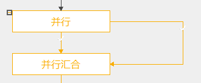
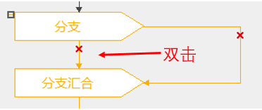
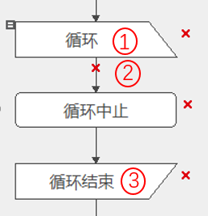
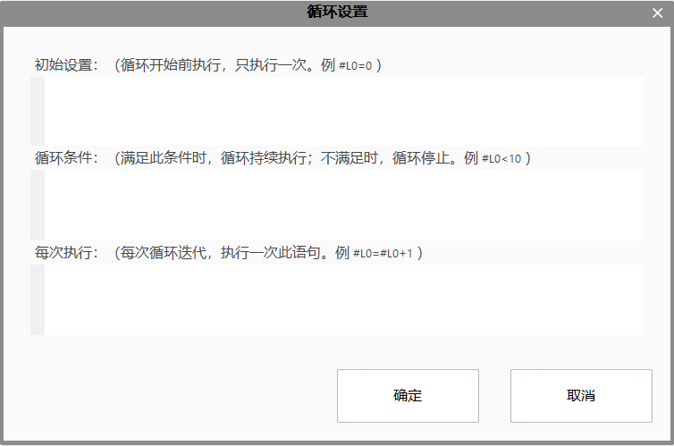
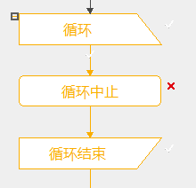
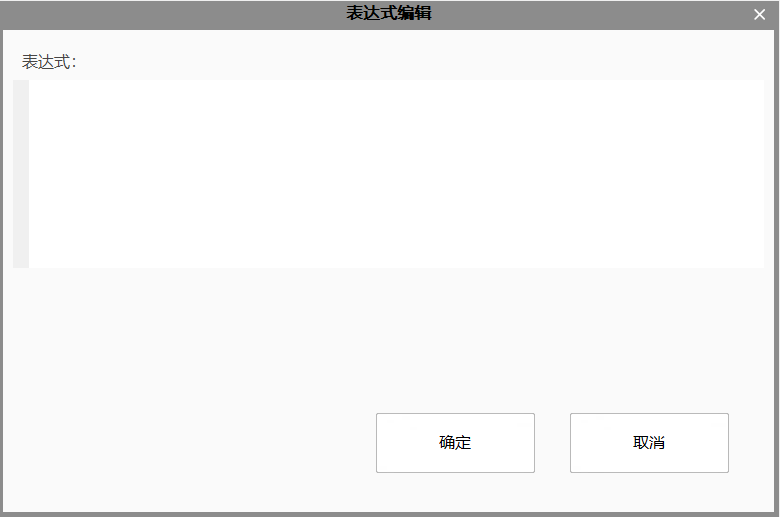

控制流用于流程图中的流程逻辑处理，分为并行运算、分支汇合、循环、循环中止。
并行运算
各个分支间独立同步运行，每次执行所有分支；
无需设置执行条件；

分支汇合
各个分支的执行是互斥的，每次最多执行1个分支；
每个分支都需要设置执行条件，满足预设条件时，才执行该分支；
双击每个分支的第一个link线，添加条件表达式，满足此条件时，执行该分支；

需要设置循环变量、循环条件、循环结束条件；

双击①处图元、②处link线或③处图元，打开循环设置界面；

循环语法规则
(1) 遵守表达式书写规则，支持”=、+、-“等三元数学操作，支持”==、!=“二元判断操作，不支持”++，–“自增自减一元操作；
(2) 支持全局变量@、局域变量#、工具输入输出，支持联想输入;
(3) 表达式输入完成后，会进行语法和句法检查，不能输入无意义字符和特殊符合（比如”;“）；
(4) 所有表达式设置不能为空；
(5) 新建”循环“控制，所有循环配置项为空，默认不执行。
设置成功，流程图中①处图元、②处link线或③处图元处显示✓。

循环中止：设置条件，用于中止循环；双击图元即可添加表达式条件。
